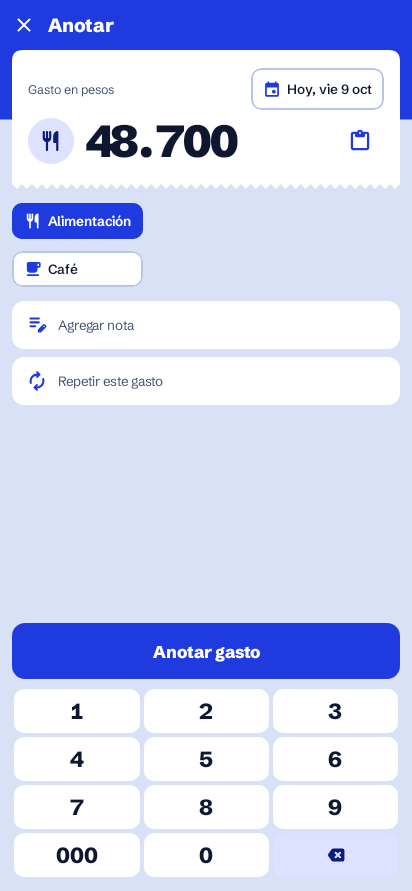
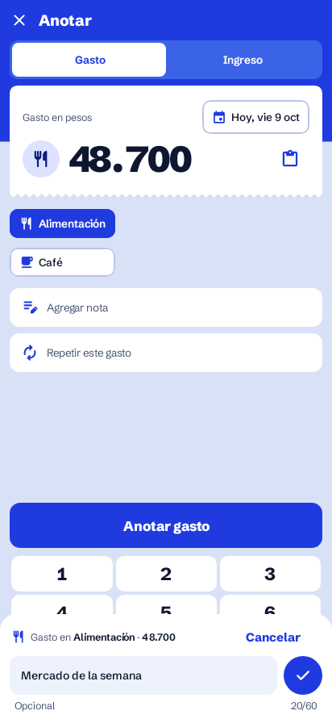

Drawn on the app's real Anotar screenshots. The orange outline marks what is new; everything else is the screen as it is today. Step 2 has two candidate places for the ⚡ button (pick one); steps 3 and 4 are the same with either.
Nothing changes for a person who never uses frequent expenses.

A round ⚡ to the right of the category chips, at the height of the first one.
«⚡ Frecuentes» at the right end of Agregar nota. Tapping the rest of the row still opens the note.
Up to 5 expenses recorded 3+ times in 90 days. It rises from the bottom, where the thumb already is.
Amount, category and note are filled in. Nothing is saved: the person can still change anything, then taps Anotar gasto.
Typing «alm» offers past notes that start that way, with their amount and category. Picking one fills all three, like the sheet.
